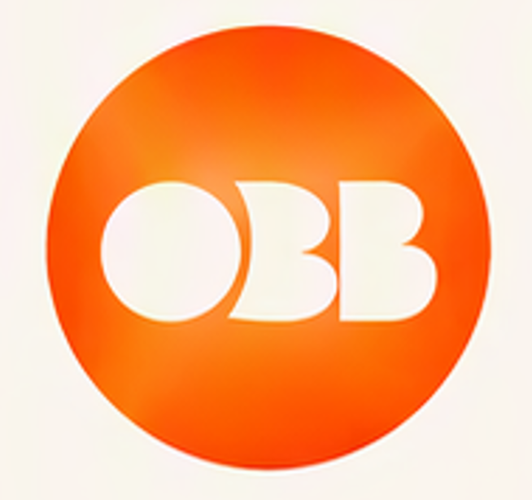
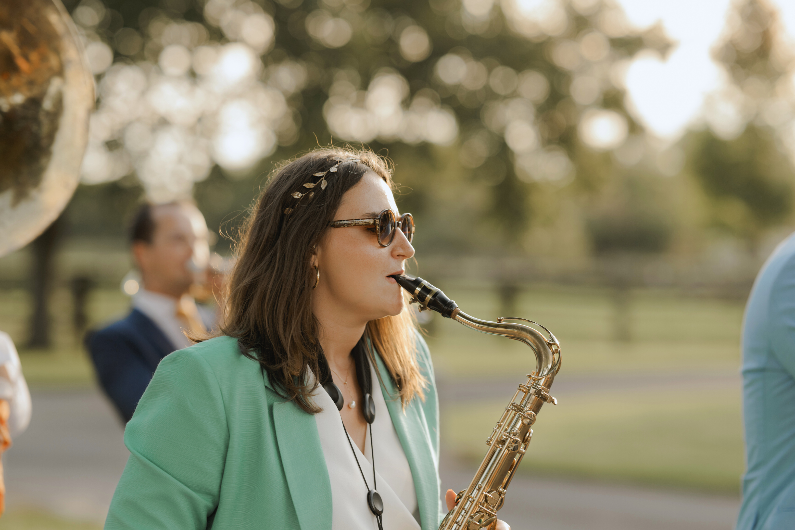
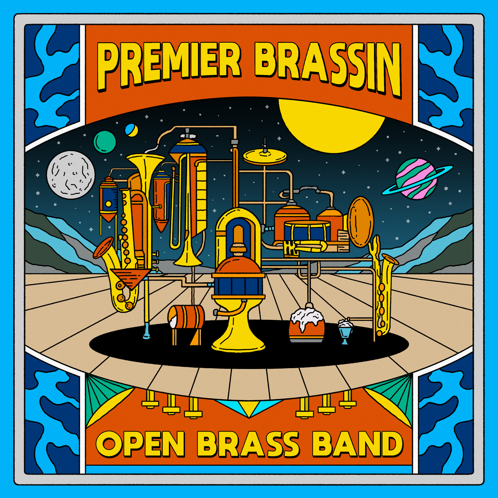

Festival SolidaysFestival · 2024

Open Brass BandLa fanfare la plus ouverte de Paris.
Scroll to vibrate ↓Une déferlante de cuivres et de percussions qui secoue, électrise et réchauffe l’ambiance en un instant.
Impossible de rester insensible : nos notes vous feront danser, chanter et vibrer jusqu’au bout de la nuit. Et bonne nouvelle, ce cocktail explosif est à consommer sans modération !

Tout a commencé dans une fanfare étudiante. En 2018, l’envie de prolonger l’aventure nous a poussés à créer l’Open Brass Band. Depuis, on joue, on vibre et on partage notre passion, avec de nouveaux copains qui nous ont rejoints en route !


Notre univers musical mêle l’énergie de la pop et la puissance des brass bands, avec des influences allant de Daft Punk à Lucky Chops, en passant par Beyoncé, Meute ou France Gall. Nous jouons en totale liberté : l’improvisation est au cœur de notre jeu, et les solos enflammés fusent à tout moment.
The best en 2024. Des scènes, des festivals et toujours la même énergie.



En 2024, ce fut le tournant de notre musique avec l’enregistrement de notre EP « Premier Brassin ». Le mélange de toutes nos influences nous a poussés à aller en studio pour donner vie à nos morceaux, avec clips et vinyles à la clé !
Un concentré musical à savourer en soirée, au coin du feu ou sur la route, les fenêtres grandes ouvertes.
Pour les yeux, retrouvez-nous sur Instagram et YouTube. Pour les oreilles, rendez-vous sur toutes les plateformes de streaming.